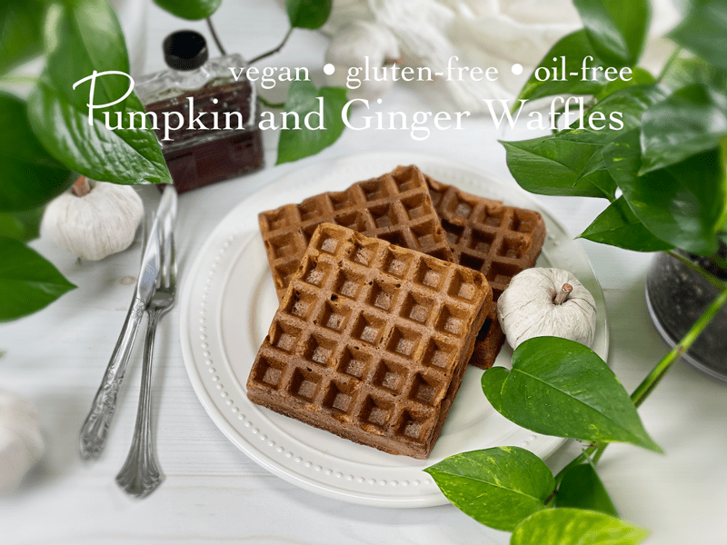
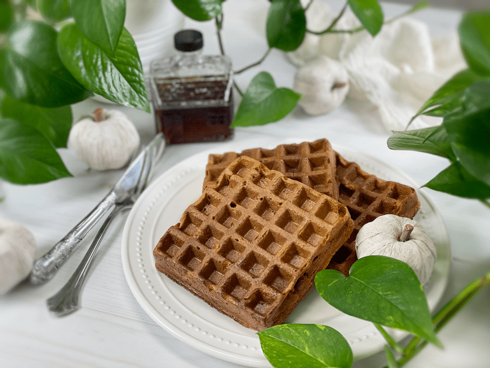

Pumpkin and Ginger Waffles or Pancakes | Cooked | Flour-Free | Oil-Free | Nut-Free
I know… I should have made these waffles Instagram-worthy, but to be honest, I didn’t want to saturate these waffles with syrup, whipped cream, nuts, and other enticing foods that we just aren’t eating these days. I don’t believe in “sacrificing” food just for the sake of a photo-op. Perhaps that is backward thinking when operating a recipe site, but I am being real here. And real food should stand on its own! That’s my story, and I am sticking to it.

As you can see in the photos, these waffles crisp up on the outside and brown beautifully. What you can’t see is the soft pillowy insides, the hint of autumn that comes through in every bite, and the nutrition that is captured in each little waffle pocket! Whenever I make waffles, I make batches so I can pop them in the freezer. It saves time, cuts down on dirty dishes, and provides me with quick, nutritious meals/snacks.

The Purpose of Each Ingredient
Water
- I chose to use water for several reasons: it doesn’t have any flavor to impact the overall recipe, it doesn’t have any calories, and it saves money! But if you wish to use a plant-based milk, I for one will not get in your way.
Ripe Bananas
- The bananas play just as important a role as the oats do. You will want to use RIPE bananas, as they will have less of a starchy taste and they are the only “sweetener” added to the recipe.
- Bananas also replace the fats in baked goods and add moisture.
- For more banana ideas, click (here).
Rolled Oats
- It is important to use old-fashioned rolled oats–not instant, not steel-cut… just plain ol’ rolled oats.
- The secret to these waffles is to let the batter rest for 10 minutes while the waffle iron heats up. The resting time gives the oat flour time to soak up some of the moisture, so you get crisp, fluffy waffles.
- Are they gluten-free? Yes! To learn more click (here). To learn how oats are grown and harvested, click (here).
Ground Flax Seeds
- Flax seeds take the place of eggs in baked recipes. They act as a binder, holding all the ingredients together.
- They need to be ground to a powder so the body can easily absorb the nutrients.
- You can read more (here).
Maple Syrup (Optional)
- Should you add maple syrup to the batter? I’ll leave that up to you, but I’d like to share where I am coming from when it comes to adding more “sugars” to the batter. For quite some time now, I have been developing recipes that use little to no added sugars. My goal has been to rely more on small amounts of fresh or dried fruits, adding liquid stevia if I want to “brighten” the sweetness level.
- My suggestion would be to hold off on adding sweetener to the batter if you enjoy putting syrups on top of your waffles or if you are just trying to cut down on sugars. One of my favorite ways of eating these waffles to take them from the fridge or freezer (thaw if frozen), toast them, sprinkle a little salt on top, and munch away — no plate, fork, napkin, or toppings… just a delicious, nutritious waffle and me.
Dried Crystallized Ginger
- Adding this type of ginger brings the waffles to a whole new level in taste and texture. It is already sweetened, which cuts down on the “heat” of the ginger and adds little chewy pockets of texture.
Pumpkin Puree and Pumpkin Spice
- Pumpkin puree – You can make your own (click here to learn how) or you can use canned. If you do buy canned, look for organic, BPA-free cans, and make sure there are NO added ingredients.
- Pumpkin spice – If you don’t have pumpkin spice, you make your own by combining the following: 1 tsp ground cinnamon, 1/2 tsp ground ginger, 1/4 tsp ground allspice or ground cloves, and 1/4 tsp ground nutmeg. Stir to blend.
Ready to make some waffles? This recipe has been a staple in our house, and I hope it becomes one in yours. Sending your apron string blessings, amie sue
 Ingredients
Ingredients
Yields 8 waffles
- 2 cups water
- 3 very ripe bananas
- 3/4 cup pumpkin puree
- 3 cups gluten-free rolled oats
- 3 Tbsp ground flaxseed or 2 Tbsp psyllium husks
- 2 Tbsp maple syrup (optional, read above)
- 2 tsp pumpkin spice
- 1 tsp ground Ceylon cinnamon
- 1/4 tsp sea salt
- 1/4 cup dried crystallized ginger
Preparation
Waffle Method
- Turn the waffle iron on and allow it to reach cooking temperature.
- Place the water, bananas, pumpkin puree, oats, flax, pumpkin spice, cinnamon, and salt into the blender or food processor. Blend until creamy.
- By adding the liquid first, the blades in the blender carafe can move more freely.
- Hand-mix in the crystallized ginger.
- Pour the batter into the center of the waffle iron. Since machines run in different sizes, add enough so the batter can slightly reach out to the sides.
- I didn’t need to use any oil to prevent sticking with my waffle machine. If you feel unsure about the machine you are using you can either do a small test run, or you can lightly coat all cooking surfaces of the waffle iron to help avoid sticking.
- You will need to add a bit more water to keep the batter at a pancake batter consistency, as it starts to thicken the longer it sits. If the batter is really thick, the waffles will be dense and possibly undercooked in the middle.
- I set my waffle iron on “custom” and cook for 6-7 minutes (until the steam coming out reduces).
-
Open the waffle iron lid and leave it open about for 20 seconds (this will help avoid sticking) before gently removing the waffle with a fork or butter knife.
-
Repeat until the batter is used up.
- Topping ideas – Cinnamon Skillet Apples | Oil-Free | Sugar-Free
Pancake Method
- Turn the pancake griddle to 350 degrees (F) and allow it to reach cooking temperature.
- Place the water, vanilla, bananas, oats, flax, cinnamon, and salt into the blender or food processor. Blend until creamy.
- By adding the liquid first, the blades in the blender carafe can move more freely.
- Pour the batter onto the pancake griddle, making whatever size you want. Just don’t make them really thick, or they may take too long to cook through.
- You will need to add a bit more water to keep the batter at a pancake batter consistency, as it starts to thicken the longer it sits.
-
Repeat until the batter is used up.
Storage
- If you have any leftovers, they can be stored in an airtight container in the fridge for your next meal. I suggest you enjoy them within 3 days.
- These waffles and pancakes can be made in advance and frozen for future meals. I recommend flash freezing: put in a single layer on a baking sheet, slip into the freezer, and once frozen, store in an airtight, freezer-safe container. This method will prevent them from sticking together.
© AmieSue.com